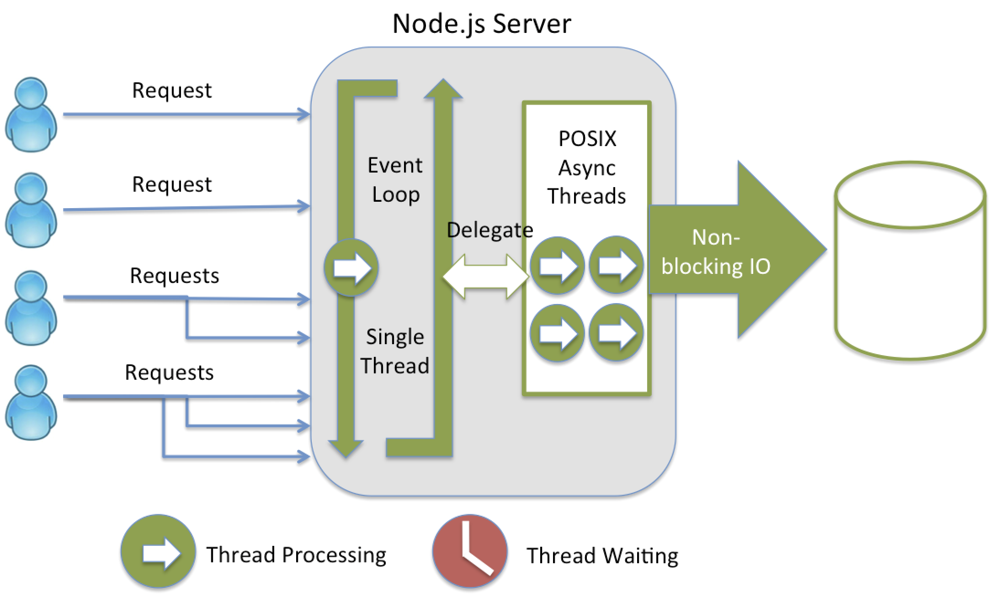
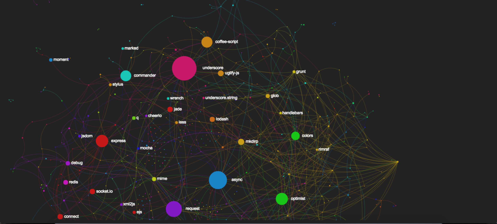
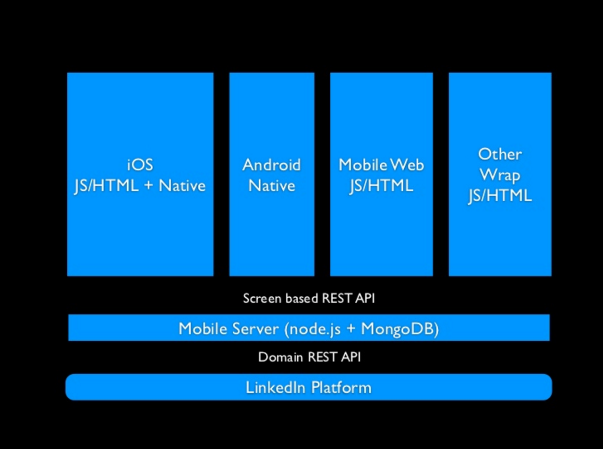

Getting Started with 
What we are going to cover
-
What is Node.js
-
What is Node.js good at
-
How are people using Node.js
What is Node.js?
-
Javascript runtime built on v8
-
Implements Event Driven Non blocking I/O Model
How we are used to doing I/O
result = db.executeQuery("SELECT name FROM Customers WHERE id=1");
// Wait for result
// Do something with result
The Traditional Model

How Node does I/O
db.executeQuery("SELECT name FROM Customers WHERE id=1", function(result, error){
// Do something with the result
});
The Node Model
What is Node.js Good At?
-
IO Intensive tasks
-
High Concurrency
-
Low resource
-
Reusing code across the client and server
The Node.js Ecosystem
 Link to VisualizationWhat is Node.js Not Good At?
CPU Intensive tasks
var http = require('http');
var server = http.createServer(function(request, response) {
console.log('Request received');
// Long CPU operation
for(var i=0; i<100000000; i+=1){
console.log(i);
}
// After which response is sent
response.write(200, {"Content-Type": "text/html"});
response.write("hello");
response.end();
});
server.listen(1256);
Demo
Who is using Node.js?
And many more
/